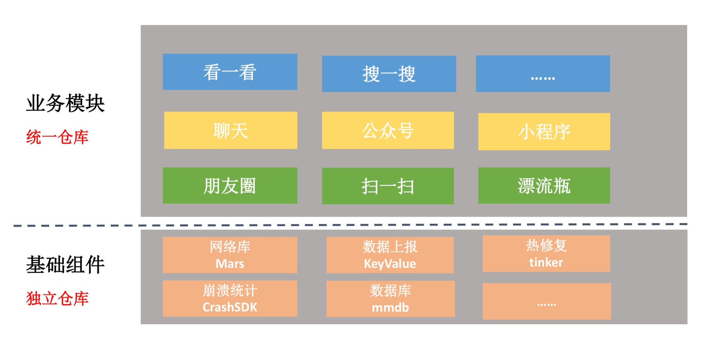
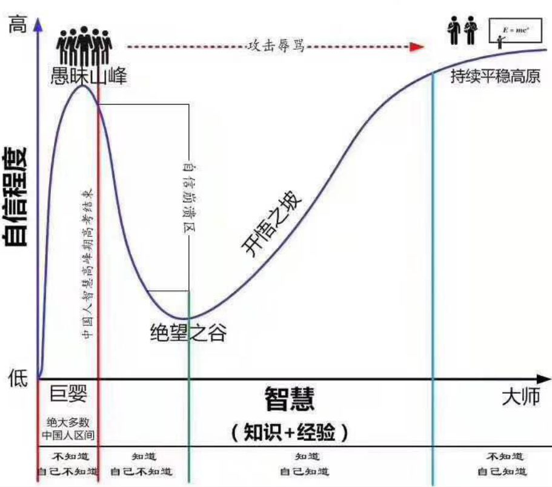
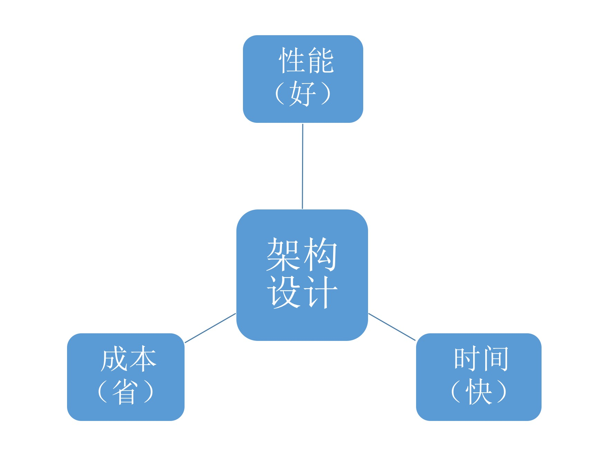
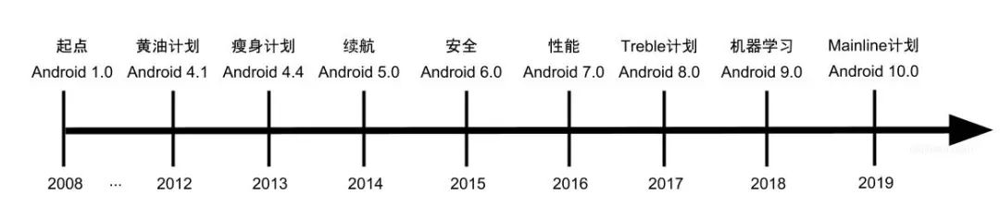
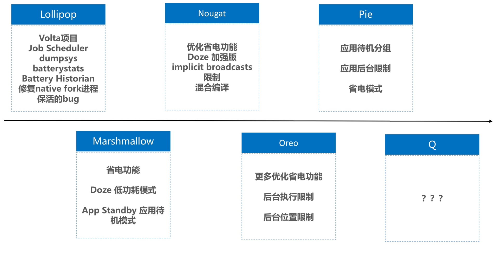
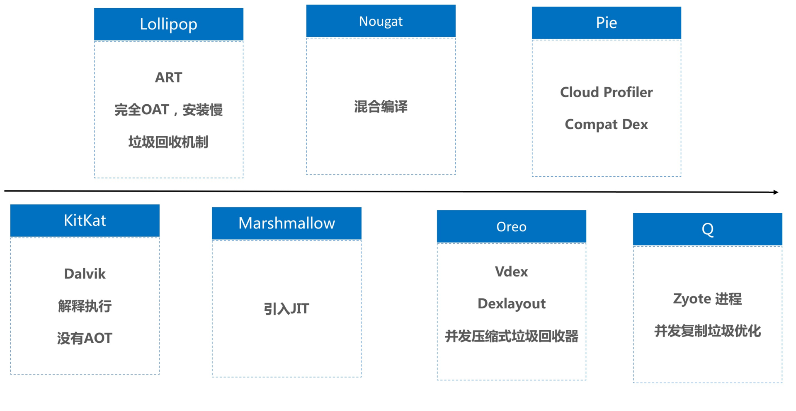
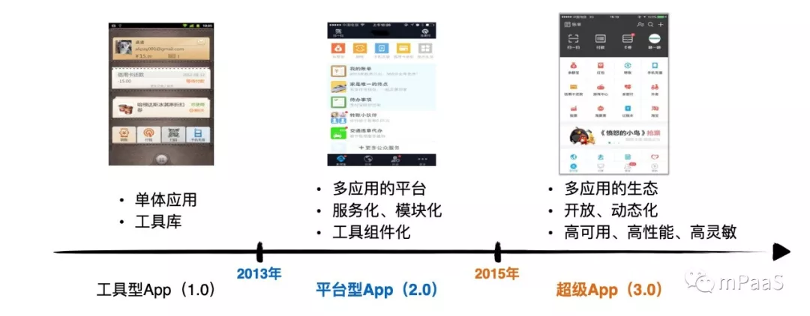
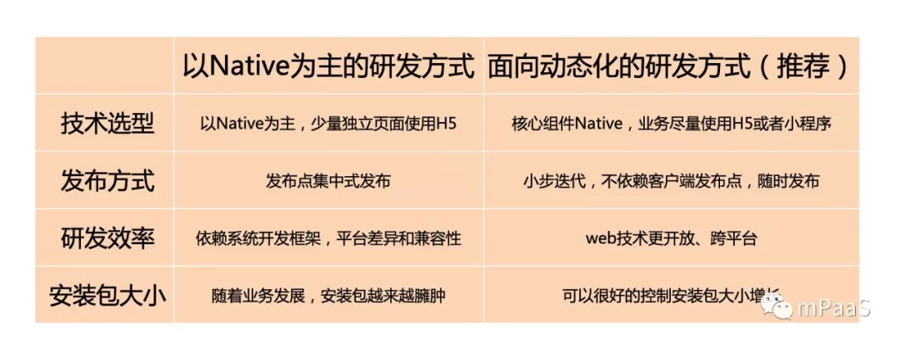

每个程序员心中都有一个成为架构师的梦想，那成为架构师这个目标是否“遥不可及”呢？从我的工作经历来看，我一共负责过搜狗输入法、微信等 4 款亿级产品的架构工作，可能有同学会好奇这些大型的 App 是如何做架构设计的。从我接手的这些应用的现实情况来看，看似光鲜的外表下都有一颗千疮百孔的心：各种日志随便输出、单例满天飞、生命周期混乱、线程乱创建、线程不安全这些问题随处可见。
所以你可以看到每个大型应用都背负着沉重的历史技术债务，架构师很重要的一项工作就是重构“老态龙钟”的陈旧架构。在接下来的“架构演进”模块中，我们一起学习架构该如何的重构和演进，帮助我们及时偿还这些“历史债务”。
虽然我们天天都在谈“架构”，那你有没有想过究竟什么是架构呢？
什么是架构
什么是架构，每个人都有自己的看法。在我看来，所谓的架构就是面对业务需求场景给出合适的解决方案，使业务能够快速迭代，从而达到“提质增效”的目标。
我先举个例子，告诉你什么是架构，以及架构的作用。我曾经为了解决 UI 渲染卡顿这个需求场景，我们设计了异步创建 View、异步布局与主线程渲染这个架构。不过架构只是设计的抽象，对于具体的实现，我们可以称之为框架。好的框架可以隐藏大家不需要关心的部分，提升我们的效率。例如 Facebook 的 Litho、微信的Vending，它们通过框架约束和异步来解决 Android 应用 UI 线程卡顿问题。
如果说监控是为了发现问题，核心在于“防”，那好的架构可以直接避免出现问题，所以架构设计的目标在于“治”。为了帮助你更好地理解架构，我们先从 Android 的架构设计说起。
1. Android 的架构
在官方文档《平台架构》中，对 Android 的描述如下：
Android 是一种基于 Linux 的开放源代码软件栈，为广泛的设备和机型而创建。

在深入 Android 架构之前，我们先来思考一下 Android 需要满足的需求场景，也就是各方对它的诉求。
-
用户。在低内存的设备上也可以流畅地运行各种应用，并且有持久的续航能力。
-
开发者。应用开发简便，并且可以在平台上获得收益。
-
硬件厂商。无论是芯片厂商还是手机制造商，都可以低成本地适配和升级自己的系统。
回想 Android 诞生之初，它为了团结一切可以团结的力量，广泛取得硬件厂商、开发者以及用户的支持。所以在做架构设计的时候，就充分考虑到了这些因素。
-
Java API 接口层。长久以来 Java 一直霸占第一大编程语言宝座，具有广泛的开发者基础。从当时来看，Android 选择 Java 作为接口语言是十分明智的。从现在看，只是没有在 Oracle 之前抢先收购 Sun 是比较失策的，导致出现当前的专利诉讼困局。总的来说，开发者通过自身熟悉的 Java 语言，友好的接口层就可以使用系统和硬件的各种能力，快速搭建出自己的应用。
-
硬件抽象层。设备制造商需要为内核开发硬件驱动程序，为了降低设备制造商的开发成本，Android 选择成熟、开源的 Linux 内核，并且将 Android 打造成一个免费、开源的操作系统，吸引了更多的手机厂商入局。但是芯片厂商和手机厂商还是需要一起做大量的工作才可以更新到最新的系统，在 Android 8.0 之后，Android 新增了 HAL 硬件抽象层。它向上屏蔽了硬件的具体实现，使小米这些手机厂商可以跳过芯片厂商，单独更新 Android 的 Framework 框架。
-
应用层。在 Android 设计之初，它就考虑到移动设备的各种限制。为了用户在低内存设备有更好的体验，同样做了大量的工作。例如设计了基于寄存器架构、可执行文件更小的 Dalvik 虚拟机以及内核的 Low Memory Killer 等。为了满足用户的基本需求，Android 系统在推出之初就内置许多的基础应用。并且通过吸引更多开发者进入，也在不断地满足用户的各种需求场景。当然，Android 也在持续优化 Framework 和 Runtime 的性能，例如我前面提到过的黄油计划、耗电优化等。
架构是为了需求场景服务，而 Android 的架构正是为了更好地满足硬件设备厂商、开发者以及用户而设计的。我非常推荐你看看《关于 Android 设计及其意义》和《Android 技术架构演进与未来》，可以让你从 Android 系统设计到技术支撑系统发展有更加深刻的理解。
2. 如何做架构选型
对于 Android 开发者来说，很多架构和框架已经非常成熟，通常我们更多面临的问题是如何为自己的应用选择合适的框架。回顾一下专栏前面学习过的内容，其实我们已经做过一次次的选择，例如 OkHttp、Cronet、Mars 应该选择哪个作为我们的高质量网络库，JSON、Protocol Buffers 数据序列化方案该如何选择等。
网络库、图片库、UI 框架、消息通信框架、存储框架，无论是 GitHub 还是 Google 官方都有非常多的方案，在选择过程我们主要要考虑下面三个因素：
-
框架的成熟度。框架是否已经被大量应用所实践，特别是亿级以上的应用。还有就是框架目前是否还在维护、框架的性能如何等。
-
工具链的成熟度。配套的工具链是否成熟、完善。例如 Flutter 作为一门新的技术，从开发、编译、测试到发布，是否有完善的工具链支持。
-
人员的学习成本、文档是否完备。结合团队的现状，需要考虑框架的学习成本是否可以接受、学习路径是否平滑、有没有足够的文档和社区支持。
对于架构选型，康威定律是比较重要的准则，这里推荐你看看《从康威定律和技术债看研发之痛》这篇文章，我们的组织架构、代码架构以及流程都应该跟我们团队的规模相匹配。这句话怎么理解呢？就是架构设计或者架构选型不能好高骛远，我们有多大的规模，就做多少的支撑。警惕长期的事情短期做，或者短期的事情长期做。
微信在 2013 年就开始了模块化改造，与此同时淘宝则进行了组件化改造。为什么会有这样的差别呢？因为当时微信只有一个团队在开发，Android 端也就 30 人不到。为了代码的隔离，微信将基础组件下沉，放到单独的仓库，由专门的人员负责。对于业务来说，依然只需要保留同一个仓库，只是拆成不同的业务 Module。感兴趣的同学可以参考《微信 Android 模块化架构重构实践》。

但对于淘宝来说，当时就有几百人同时在一个应用上面开发，而且这些人分别属于不同的团队，分散在全国各地。所以无论是基于代码的权限保护，还是从开发效率的考量，都要求将所有业务模块隔离开来，也就是每个业务模块都应该是单独的仓库。
什么是架构演进
“没有过不去的坎，只有过不完的坎”。在业务发展的过程，总会遇到一些新的问题，而且可能在发展到某一时刻时，一些旧的问题就不复存在了。例如为了兼容 Android 4.X，当年我们在架构上做了大量的兼容设计，但是当不再需要兼容 4.X 设备的时候，这些包袱我们就可以适时抛弃掉。
1. 为什么要做架构演进
架构是为了业务需求场景服务，那它也要顺应业务的变化而适时调整。也就是说，架构需要跟随业务的发展而演进。
“君有疾在腠理，不治将恐深”，微信每年都会经历一次大的重构，因为我们坚持代码架构最终都会腐烂，该推倒了就该重构，不要一直修修补补。架构演进可以给团队带来下面几个变化：
-
打破不满。需要打破保守的做法，要积极面对不合理的地方。团队定期需要着手开启重构，将大家平日对代码的不满释放出来。将架构的腐化（效率降低、抱怨上升）转化为架构优化的动力。
-
重构信任。重构开发者之间的心态，不定期的推动模块重构。一些问题的解决，往往可以推动更多人去尝试。
-
团队培养。重构也是团队进步的机会，让更多的成员掌握架构能力，培养全员架构意识，实现“人人都是架构师”。
但是对于架构演进的过程，我们需要有辨别能力，也就是常说的“技术视野”。这里包括对各种技术栈的选择和比较、架构设计的考虑，要结合业务和团队当前的情况，做出合理的判断，要清楚的知道做什么事情收益最大等。
这里的反面例子可能就是辛辛苦苦造了一套轮子，结果发现别人早就有了，甚至比我们做得更好。这个问题的原因就在于你的技术视野。在“高质量开发”和“高效开发”模块，我反复地跟你分享目前国内外大厂的最新实践方案，正是希望提升我们的技术视野。特别是“高效开发”模块，可能有同学会认为这些话题太大了，跟自己好像关系不大。其实应用开发流程的每一个步骤都关系到你我，同时又涉及大量的内容，每一块铺开来可能都可以是一个新的专栏。而作为“Android 开发高手课”，我更想从顶层给你呈现完整的架构设计，而不是去详细分析某个细节优化点。这些都是希望可以帮你站在高处看问题，全面提升你的技术视野。
对于技术视野的培养，可能没有太多的捷径，需要我们经过长时间的实践，经历反反复复的挫折，才能从“巨婴”成长为“大师”。

在“架构演进”模块，为了进一步帮助我们提升技术视野和架构的能力，我准备了下面这些内容：
-
GOT Hook、PLT Hook、Inline Hook，我将对比三种 Native Hook 框架的原理和差异，告诉你应该如何去选择。以及对于 Native 开发，我还有哪些经验。
-
大前端纷纷扰扰，如何演进和选择，如何选择适合我们应用的跨平台和动态化方案。
-
技术日新月异，对于新技术我们应该如何考虑是否跟进，Flutter 是不是真的可以一统天下。
-
在应用开发之外，我们还邀请了三位专家，分别介绍他们在移动游戏、音视频和 AI 领域开发的经验。对于这些领域，它们的架构是什么样的，我们又该如何学习和转型。
2. 如何做架构演进
架构演进是必要的，但是我们需要充分认识到困难，真正去做远比想要难多了，特别是其中各种各样的历史包袱问题。
架构的演进，通常来说具体实践方式就是重构。如果我们下定决心要重构，我有两个小建议送给你：
- 演进式的，符合团队现状的。我们很难找到一个性能最好、成本最省、时间最快的方案，需要权衡性能、成本、时间三者的关系。如果我们时间充裕，那可以朝着更好的性能目标去努力。但如果时间紧急，我们可以分阶段去重构。

- 可度量的，每个阶段都要有成果。架构演进不能一味“憋大招”，最好能分阶段实施，并且每个阶段都要有成果。这样可以让团队成员更快地感受到优化成果，也可以激励更多的人参与到重构的事业中。

在《Android 技术架构演进与未来》一文中，回顾了 Android 版本的发布时间线。Android 系统每年都会发布一个新的版本，每个版本也会有大大小小的重构。重构的目的依然是希望更好地满足用户、开发者以及硬件厂商的诉求。例如为了提升手机的续航能力，我们可以回顾一下 Android 在耗电优化的演进历程。

为了应用程序执行速度更快，Android Runtime 也是每个版本都会优化的模块，下面是 Android Runtime 各个版本的演进历程。

对于虚拟机的运行机制与各个版本的差异，也是很多公司在面试时喜欢问的。下面是一些关于虚拟机架构演进比较不错的资料，我把它们分享给你。
而 Android 8.0 的Treble计划，引入了 HAL 硬件抽象层，解决了硬件厂商升级难的问题。但是即使厂商升级到最新的系统也并不能直接交付给用户，这里还存在应用兼容性的问题。为什么 Android P 要极力推出 Hidden API 的限制？这里最初考虑的并不是安全性的问题，而是为了减少每次 Android 版本升级的兼容性适配时间，让 Android 版本的发布节奏快起来。
Hidden API 的设计也有出于架构演进的考量，Android 不希望出现修改 Framework 内部任意一个私有方法的时候，都可能会引起外部应用兼容适配，这会对重构带来非常大的包袱。
Android 系统如此，应用的架构演进也是如此。由于组件化带来的各种性能问题，支付宝和淘宝在架构上也顺应了这种变化。在工程结构上，它们依然保留组件在仓库上的代码隔离。但是在最终产物上，组件化已经回归模块化，非核心业务会逐渐迁移到 H5 或者小程序。

无论微信、支付宝、淘宝，大家都想当超级 App，努力成为满足用户尽可能多需求的微型操作系统。应用的架构也需要顺应业务形态的转变，在《敏捷开发与动态更新在支付宝 App 内的实践》一文中，也描述了支付宝这几年在架构升级驱动研发方式转变，推荐你仔细读读。

总结
从初步接触架构设计，到基本掌握架构的精髓，可以说同样也没有捷径可言。架构设计能力的成长是建立在一个又一个坑、一次又一次的重构之上。不过成为架构师这个目标并不“遥不可及”，在日常工作中我们可以反复进行锻炼。
架构设计不一定是整个应用或者系统的设计，也可以是一个模块或者一个需求的设计。每接手一个需求，我们可以对自己提更高的要求，更加细致地考虑问题。例如如何对现有代码的影响最小，如何快捷清晰的实现功能，在开发过程中如何对组件、控件做更好的封装，如何去优化性能，有没有哪些新的技术可以帮助开发这个需求等。
课后作业
一个技术人的一生应该有个代表作，给自己的技术生涯一个交代。在你的工作中，有没有令你感到满意的架构设计（某个应用、某个模块或者某个框架都可以）？你对架构演进有什么看法，又遇到过哪些问题？欢迎留言分享给我和其他同学。
COMMUNITY NOTES
读者评论
逆向微信的过程中，发现微信很多架构都看得到历史变迁，比如说微信加密的主库中，几十张表，表名和字段名都命名有大小写驼峰，有小写下划线。微信App内部的私有协议中，有纯二进制协议，有二进制和文本混合(朋友圈snsinfo表的blob类型的字段)，有纯文本协议的，纯文本的又有json的，有xml的，还有用冒号隔开内容的自定义格式的。
记得自己15年刚入行的时候，小公司一个人负责Android客户端的开发，觉得把控项目的技术方案算是架构；后来去某直播平台上10+人的Android项目组觉得把写出优秀的框架也算架构；现在我我觉得架构真的像作者说的无处不在，一个小的需求，不同人的实现是可能有差别的，而且同一人在不同的环境和技术积淀下也会不同。所以，以求更好方为上策。
微信的db读写，不知道你们是怎么做的😄，我现在IM的架构是读写全在主线程(主线程io没有大家想象的这么可怕，只是数据量多的时候，还是会卡)，我现在的想法是下个版本改成一个线程专门写，然后读可以多线程读
我一直认为架构是一个很抽象的话题，别人只能分享他们当时特定的困难下如何解决问题，从而演变出现在稳定高效的框架，我们能汲取的只是他们思考问题的方式，出现问题的根源是什么，有什么方式可以解决，这些解决方案中哪些是优秀的方案。
高屋建瓴，很棒
Github搜索不到vending？
引进架构的目的是为了可维护、可扩展，不同的需求由不同的人做确实不一样。我的原则就是抽象、隔离有层次，按功能划分模块，然后使用合适的设计模式规划。
我现在去架构的理解就是整合好的第三方框架到项目，规范项目内框架的使用，codereiew避免垃圾代码进入。